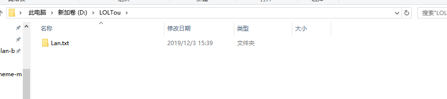
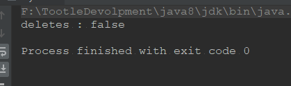

File类的概述和使用方法
一、file类的概述和构造方法
文件和目录路径名的抽象表示形式
构造方法：
- public File(File parent, String child)；
- public File(String pathname)；
- public File(String parent, String child)；
- public File(URI uri)；
共有四个构造函数，我们下面来学习下这几个构造函数
构造方法的 介绍：
public class MyFile {
public static void main(String[] args) {
//把D:\\a.txt封装成一个对象
File file1 = new File("D:\\a.txt");
File file2 = new File("D:\\","a.txt");
File file3 = new File("D:\\");
File file4 = new File(file3,"a.txt");
//以上几种方式含义一样
}
}值得注意的是，上面的构造方法并不会创建文件或者文件夹，因为我们通过File类的描述我们就知道，构造函数是“文件和目录路径名的抽象表示形式”，所以接下来我们介绍创建文件夹
二、创建文件及目录（文件夹）
首先，我们要知道常用的创建文件或者目录的方法有哪些
public boolean createNewFile() throws IOException
当且仅当不存在具有此抽象路径名指定名称的文件时，不可分地创建一个新的空文件。检查文件是否存在，若不存在则创建该文件。
public boolean mkdir()
创建此抽象路径名指定的目录。 返回：当且仅当已创建目录时，返回 true；否则返回 false
public boolean mkdirs()
创建此抽象路径名指定的目录，包括所有必需但不存在的父目录。注意，此操作失败时也可能已经成功地创建了一部分必需的父目录。 返回：当且仅当已创建目录以及所有必需的父目录时，返回 true；否则返回 false
我们发现返回值是boolean类型，也就是说，如果创建成功，返回：”ture”,失败，反回”false”。
代码如下：
public class MyFile {
public static void main(String[] args) throws IOException {
//把D:\\a.txt封装成一个对象
File file1 = new File("D:\\a.txt");
System.out.println("createNewFile : "+file1.createNewFile());
File file2 = new File("D:\\LOLTouLan");
System.out.println("mkdir : "+file2.mkdir());
File file3 = new File("D:\\LOLTou\\Lan.txt");
System.out.println("mkdirs : "+file3.mkdirs());
}
}控制台返回:
然后我们又找到D盘下面，我们发现果然多了几个文件
我们发现file3并没有像我们想像的一样，创建一个Lan.txt，而是创建了一个名为Lan.txt的文件夹，如下图：

如果存在相应的文件或目录则返回false，否则返回true
我再次运行了一次该程序，控制台输出：
正好对应我们上面说的。
如果我们创建文件或目录的时候没有指定盘符，那么默认会创建在该项目下，
如下：
public class MyFile {
public static void main(String[] args) throws IOException {
//把D:\\a.txt封装成一个对象
File file1 = new File("a.txt");
System.out.println("createNewFile : "+file1.createNewFile());
/*File file2 = new File("D:\\LOLTouLan");
System.out.println("mkdir : "+file2.mkdir());
File file3 = new File("D:\\LOLTou\\Lan.txt");
System.out.println("mkdirs : "+file3.mkdirs());*/
}
}运行结果：
三、删除文件或目录
刚才我们复习了创建文件或目录，接下来我们在复习下删除文件及目录，
public boolean delete();
删除文件，代码如下：
public class MyFile {
public static void main(String[] args) throws IOException {
//把D:\\a.txt封装成一个对象
File file1 = new File("a.txt");
System.out.println("createNewFile : "+file1.delete());
}
}控制台：
项目目录：
删除目录，代码如下：
Java中的delete方法不走回收站
public class MyFile {
public static void main(String[] args) throws IOException {
//把D:\\a.txt封装成一个对象
/*File file1 = new File("a.txt");
System.out.println("delete : "+file1.delete());*/
File file2 = new File("LOLTouLan");
System.out.println("delete : "+file2.delete());
File file3 = new File("LOLTou\\Lan.txt");
System.out.println("deletes : "+file3.delete());
}
}运行前：
控制台:
运行后：
我们发现，当我们对file3创建的对象进行删除时我们发现没有删干净，于是我重新创建他们，然后执行下面代码：
File file3 = new File("LOLTou");
System.out.println("deletes : "+file3.mkdirs());然后我们发现，控制台输出：

当然文件也没有删除，所以，我重新查看API，我们发现
四、File类的重命名功能
public boolean renameTo(File dest);
将一个名字重命名为另一个名字
代码如下：
public class MyFile {
public static void main(String[] args) throws IOException {
File file3 = new File("a.txt");
File file4 = new File("b.txt");
System.out.println("renameTo : "+file3.renameTo(file4));
}
}运行前：
运行后：
如果在不同路径下，另一个路径下没有file4指定的文件，那会怎么样呢？
代码如下：
public class MyFile {
public static void main(String[] args) throws IOException {
File file3 = new File("b.txt");
File file4 = new File("LOLTou\\a.txt");
System.out.println("renameTo : "+file3.renameTo(file4));
}
}运行之后效果如图：
结论：
如果文件路径名相同那么是修改名字，
如果不同，则是剪切，加修改名字。
五、判断功能
public boolean isDirectory()
测试此抽象路径名表示的文件是否是一个目录
public boolean isFile()
测试此抽象路径名表示的文件是否是一个标准文件。
public boolean isHidden()
测试此抽象路径名指定的文件是否是一个隐藏文件
public boolean canWrite()
public boolean canRead()
测试应用程序是否可以读取此抽象路径名表示的文件。
public boolean exists()
测试方法代码：
public class FileDemo {
public static void main(String[] args) {
/*
public boolean isDirectory()
public boolean isFile()
public boolean isHidden()
public boolean canWrite()
public boolean canRead()
public boolean isHidden()
*/
File file = new File("LOLTou");
File file1 = new File("LOLTou\\a.txt");
System.out.println("判断是否为目录 : " + file.isDirectory());
System.out.println("判断是否为File : " + file.isFile());
System.out.println("判断是否可读 : " + file.canRead());
System.out.println("判断是否可写 : " + file.canWrite());
System.out.println("判断是否为隐藏文件 : " + file.isHidden());
System.out.println("判断文件是否存在 : " + file.exists());
System.out.println("---------------------------");
System.out.println("判断是否为目录 : " + file1.isDirectory());
System.out.println("判断是否为File : " + file1.isFile());
System.out.println("判断是否可读 : " + file1.canRead());
System.out.println("判断是否可写 : " + file1.canWrite());
System.out.println("判断是否为隐藏文件 : " + file1.isHidden());
System.out.println("判断文件是否存在 : " + file1.exists());
}
}六、获取功能
public String getAbsolutePath();
返回此抽象路径名的绝对路径名字符串。
public String getName();
返回由此抽象路径名表示的文件或目录的名称。该名称是路径名名称序列中的最后一个名称。如果路径名名称序列为空，则返回空字符串。
public long length();
返回由此抽象路径名表示的文件的长度。如果此路径名表示一个目录，则返回值是不确定的.
public long lastModified();
返回此抽象路径名表示的文件最后一次被修改的时间。
测试代码:
public class FileDemo2 {
public static void main(String[] args) {
File file = new File("LOLTou\\a.txt"); //空文件
File file1 = new File("LOLTou\\b.txt"); //非空文件
File file2 = new File("LOLTou"); //文件夹，目录
System.out.println("绝对路径："+file.getAbsolutePath());
System.out.println("路径"+file.getPath());
System.out.println("文件或者是目录名字:"+file.getName());
System.out.println("文件长度"+file.length());
Date date = new Date(file.lastModified());
SimpleDateFormat simpleDateFormat = new SimpleDateFormat("YYYY-MM-dd HH:mm:ss");
String s = simpleDateFormat.format(date);
System.out.println("最后一次被修改的时间:"+s);
System.out.println("---------------------");
System.out.println("绝对路径："+file1.getAbsolutePath());
System.out.println("路径"+file1.getPath());
System.out.println("文件或者是目录名字:"+file1.getName());
System.out.println("文件长度"+file1.length());
Date date1 = new Date(file1.lastModified());
SimpleDateFormat simpleDateFormat1 = new SimpleDateFormat("YYYY-MM-dd HH:mm:ss");
String s1 = simpleDateFormat1.format(date1);
System.out.println("最后一次被修改的时间:"+s1);
System.out.println("---------------------------");
System.out.println("绝对路径："+file2.getAbsolutePath());
System.out.println("路径"+file2.getPath());
System.out.println("文件或者是目录名字:"+file2.getName());
System.out.println("文件长度"+file2.length());
Date date2 = new Date(file2.lastModified());
SimpleDateFormat simpleDateFormat2 = new SimpleDateFormat("YYYY-MM-dd HH:mm:ss");
String s2 = simpleDateFormat2.format(date2);
System.out.println("最后一次被修改的时间:"+s2);
}
}运行结果：
高级获取功能：
public String[] list();
public File[] listFiles()
演示代码：
public class FileDemo3 {
public static void main(String[] args) {
File file = new File("LOLTou");
String[] arry = file.list();
for (String s : arry) {
System.out.println(s);
}
System.out.println("----------------------");
//public File[] listFiles();
// 返回一个抽象路径名数组，这些路径名表示此抽象路径名表示的目录中的文件。
File[] arry1 = file.listFiles();
for (File s1 : arry1) {
System.out.println(s1.getName());
System.out.println(s1.getPath());
System.out.println(s1.getAbsolutePath());
System.out.println(s1.getParent());
System.out.println(s1.getParentFile());
System.out.println("--------------------");
}
}
}运行如下：
七、获取某文件下后缀相同的文件
分析：
- 首先获取该目录下的所有文件
- 判断文件后缀是否为.jpg
- 如果是，输出
代码如下（V1.0）:
public class FileDemo4 {
public static void main(String[] args) {
File file = new File("D:\\LOLTou");
File[] files = file.listFiles();
for (File f : files) {
if (f.isFile()) {
if (f.getName().endsWith(".jpg")) {
System.out.println(f.getName());
}
}
}
}
}运行如下：
（V2.0）
public class FileDemo4 {
public static void main(String[] args) {
File file = new File("D:\\LOLTou");
//因为我们只需要文件名字所以用String[] 方法足够用了
String[] f = file.list(new FilenameFilter() {
@Override
public boolean accept(File dir, String name) {
return new File(dir,name).isFile()&&name.endsWith(".jpg");
}
});
for (String s : f) {
System.out.println(s);
}
}
}八、批量修改文件名
/**
* 题目：
* 将IMG_20190214_214554.jpg名字改为IMG_214554.jpg
* 将IMG_20190214_214555.jpg名字改为IMG_214555.jpg
*
*/
public class FileDemo5 {
public static void main(String[] args) {
File srcFolder = new File("D:\\LOLTou");
File[] listFiles = srcFolder.listFiles();
for (File file : listFiles) {
String name = file.getName();
int index = name.indexOf(0);
String FirstName = name.substring(index+1, index + 4);
//System.out.println(FirstName);
int start = name.lastIndexOf("_");
String lastName = name.substring(start);
//System.out.println(FirstName+lastName);
//System.out.println(FirstName.concat(lastName));
String newName = FirstName.concat(lastName);
File file1 = new File(srcFolder, newName);
System.out.println(file.renameTo(file1));
}
}
}运行结果
运行前：
运行后：
九、总结
IO流的操作大部分都是对文件的操作，所以Java提供File类 供我们操作
构造方法：
- public File(File parent, String child)；
- public File(String pathname)；
- public File(String parent, String child)；
File类的方法：
public boolean createNewFile() throws IOException
public boolean mkdir()
public boolean mkdirs()
public boolean delete();
public boolean renameTo(File dest);
public boolean isDirectory()
public boolean isFile()
public boolean isHidden()
public boolean canWrite()
public boolean canRead()
public boolean exists()